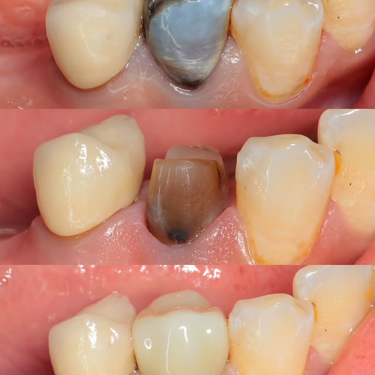
07 · 1
تغليفات الزركون
د. جعفر رحيم
«تغليفات الزركون لإنقاذ ما تبقّى من السن بعد معاناة طويلة مع الحشوة المعدنية.»
سن متضرّر تحت حشوة معدنية قديمة. بدل القلع، الترميم بزركون يحفظ الجذر — ويرجّع الشكل والقوّة.
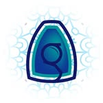
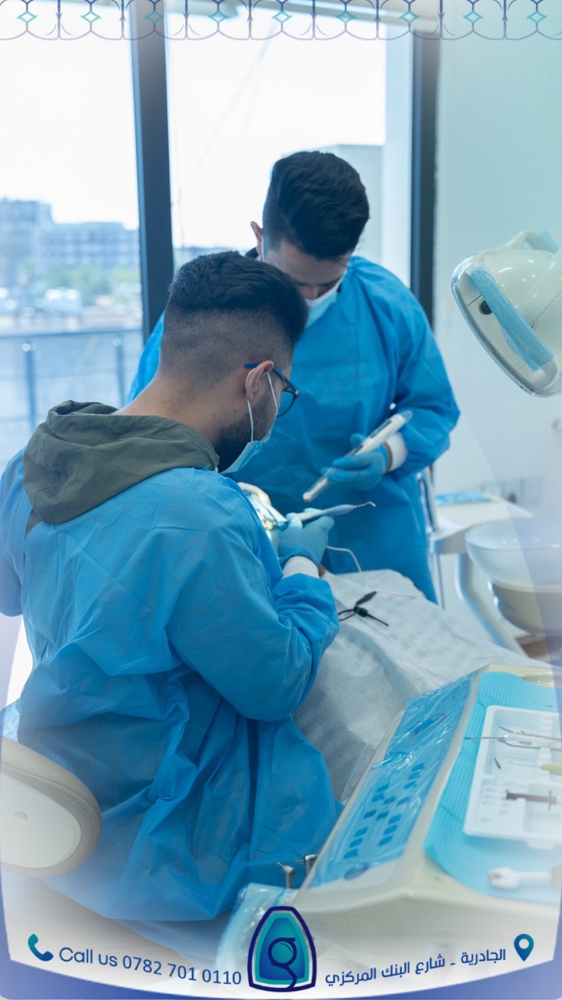
منذ سنوات في الجادرية ★ 5.0 على خرائط Google
خمسة أطباء يعملون تحت سقف واحد، خمسة أقسام لكل ما تحتاجه أسنانك، وفلسفة واحدة: نحافظ على السن قدر ما نقدر.
العنوان
بغداد · الجادرية · شارع البنك المركزي
مقابل باربي — بناية كافيه شغف
الطابق الثالث
خمسة أطباء، كل واحد له تخصصه وأدواته. اِعرفهم قبل ما تجي.
السطر الصغير جنب كل اسم — هذي كلمة الطبيب نفسه. يقدر يكتبها كما يحب.
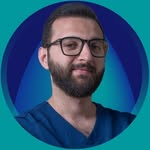
Dr. Yasser Al‑Ruwaishdi
الطبيب الرئيسي · العلاجات الدقيقة
«علاج السن مثل النجارة الدقيقة — تشتغل بأدوات أصغر مما تتصوّر، وكل ملّيمتر له قصة.»
يشتغل تحت المايكروسكوب الجراحي ZEMAX OMS 2380 — يعني يشوف تفاصيل ما تنشاف بالعين المجرّدة، خاصة في علاج العصب والترميمات الدقيقة. ولمن يحتاج المريض راحة أكثر، يقدّم له جلسة بالغاز الضاحك.
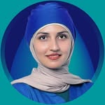
Dr. Dina Hamid
أخصائية التقويم
«التقويم ما يصلّح الأسنان فقط، يصلّح علاقة المريض مع ابتسامته.»
تعالج التقويم بكل أنواعه: المعدني، الشفّاف، الثابت، المتحرّك، وتقويم الأطفال. ترتيب وتوازن أكثر — أكل أسهل، تنظيف أسهل، وابتسامة أوضح وأجمل.
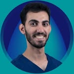
Dr. Mohammad Baqer
طب أسنان الأطفال
«الطفل ما يتذكّر شنو سوّيتله، يتذكّر شلون حسّسته.»
يستقبل أطفال العيادة في غرفته المسمّاة «غرفة الحلزون» — غرفة مصمّمة كي ما يخاف الطفل من جلسة طبيب الأسنان. يشتغل بتقنية البايوميمتك للحفاظ على أكبر قدر ممكن من السن الطبيعي.
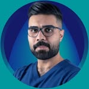
Dr. Jafar Raheem
الترميم وتغليفات الزركون
«ما كل سن متضرّر لازم ينقلع — أكثر الحالات ممكن تنقذ، بس بصبر وأدوات صحيحة.»
يشتغل بنظام التخدير الإلكتروني STA Single Tooth Anesthesia من Milestone Scientific — حقنة محوسبة دقيقة، إحساس ألم أقل، بدون تخدير الشفّة أو اللسان. تخصصه ترميم الأسنان وتغليفات الزركون.
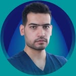
Dr. Ali Rabah
طب أسنان عام
«الفحص الأول هو نصف العلاج — لو فهمنا السبب صح، الباقي يصير أسهل.»
ضمن فريق كلوبل، يستقبل الحالات اليومية ويتابع المرضى بين الجلسات. الجلسة الأولى عنده غالبًا فحص شامل وخطّة علاج واضحة قبل أي تدخل.
خمسة أقسام تخصصية تحت سقف واحد — من الحشوة الصغيرة لحد تصميم ابتسامة كاملة.
قسم أطفال له غرفة باسم، وحائطها قصة.
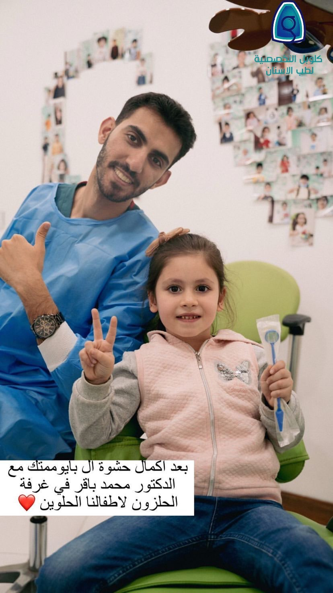
«هنا الطفل ما يخاف. هنا الطفل ينطي أوكي، ويرفع إيده، ويرسم.»
غرفة الأطفال عند الدكتور محمد باقر اسمها غرفة الحلزون. على حائطها مئات صور المرضى الصغار، مرتّبة على شكل حرف G وقلب. كل طفل يجي العيادة، صورته تنضاف للحائط — يعني الجلسة ما تخلص بطبعة سن، تخلص بطبعة على الحائط.
ثلاث أدوات نشتغل عليها يوميًا — بأسمائها التجارية، مو بأوصاف عامة.
مايكروسكوب جراحي يكبّر السن عشرات المرّات. لمن نشتغل على قنوات الجذور أو الترميمات الدقيقة، الفرق بين «يشوفه» و«يحدسه» يصير فرق العلاج كله.
يشتغل عليه · د. ياسر
نظام تخدير محوسب من Milestone Scientific. يحقن السن المحدّد بمعدل ضغط مدروس — إحساس ألم أقل، بدون تخدير الشفّة أو اللسان. تطلع من العيادة وفمك يشتغل طبيعي.
يشتغل عليه · د. جعفر
خيار للمرضى الذين يخافون من جلسة طبيب الأسنان. غاز بسيط ينشق ويرتاح المريض — ما ينام، بس يفقد القلق. نشرحه قبل ما تطلبه عشان تعرف شنو يصير.
يقدّمه · فريق كلوبل
صور من جلساتنا، وقصة كل صورة كما تحصل فعلًا.
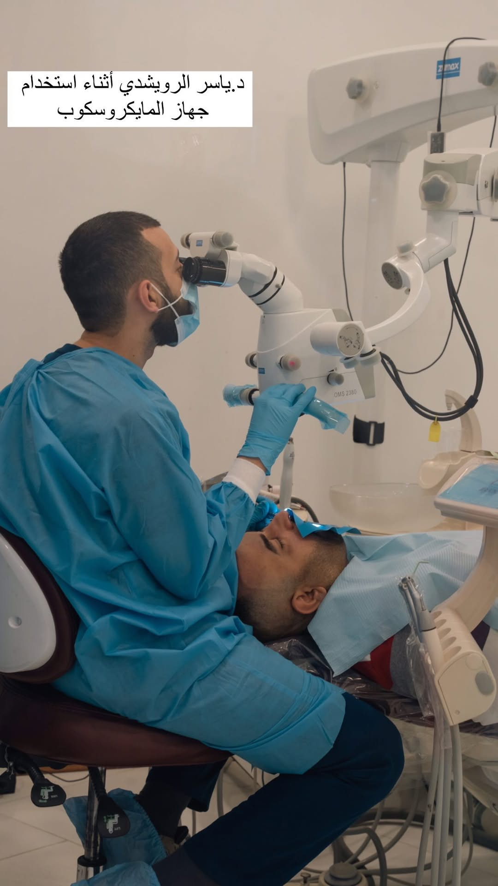
هذي جلسة علاج عصب. الدكتور ياسر تحت المايكروسكوب جالس يكبّر القناة عشرات المرّات عشان يضمن إن ما يبقى نسيج ملوّث داخل السن. الفرق بين علاج عصب يعيش سنين، وعلاج يفشل بعد شهرين، غالبًا يكون بهالـ«شوفة».

بعد ما تخلص جلسة الطفل، صورته تنضاف للحائط. مع الوقت، حائط الغرفة صار مرسوم بمئات الصغار اللي جوا، وعلى شكل حرف G وقلب. هاي مو ديكور — هاي أرشيف الغرفة.
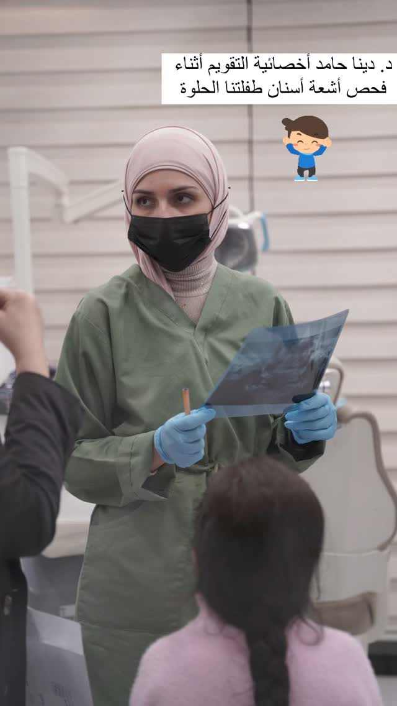
الدكتورة دينا أثناء قراءة أشعة الأسنان لطفلتنا الحلوة. قبل أي تقويم، تكون هناك صورة بانورامية — تشوف ترتيب الأسنان، الجذور، والفك. الخطّة تنبني من هنا، مو من النظرة الأولى.
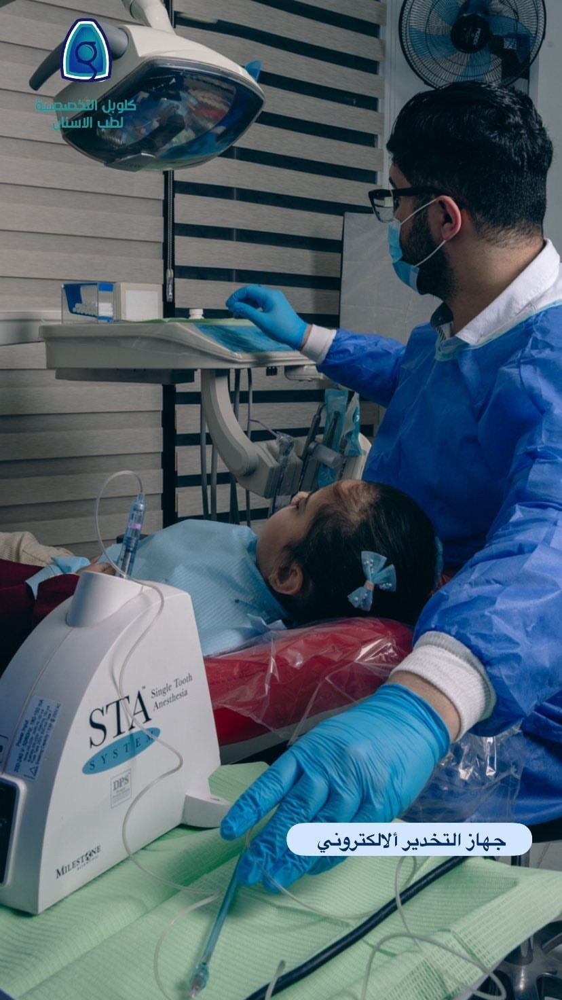
الجهاز الأبيض اليسار اسمه STA. بدل ما الطبيب يضغط على الحقنة بإيده، الجهاز يضغطها بمعدّل بطيء ومحسوب. النتيجة: ولا قطرة دواء تطلع قبل وقتها، ولا «وخزة» تخوّف الطفل. الطفلة بالصورة لازالت ساكتة.
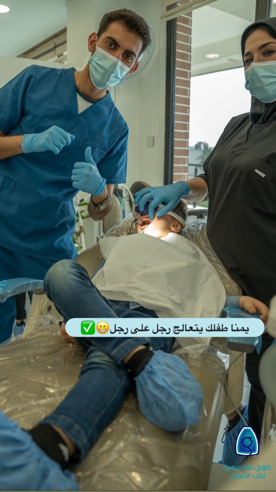
جلسة عند الدكتور محمد باقر — الطفل مرتاح، مغمّض عينه بشاش حماية، والفريق واقف عاليمين. الراحة هاي مو مصادفة، هاي ترتيب: غرفة الأطفال مصمّمة عشان الجلسة تكون أقصر، أهدى، وما تترك أثر سلبي بذاكرة الطفل.
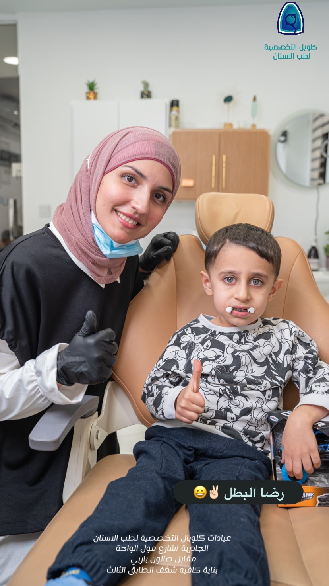
رضا، أول مرة يدخل العيادة وكان متخوّف. خلصت الجلسة وطلع رافع إصبعه. هذا النوع من النهايات هو السبب الذي يجي بسببه أبو وأم الطفل — مو السن، بل الانطباع الأول الذي يبقى مع الطفل لسنين قدّام.
حالات حقيقية، بأسماء الأطباء وبدون فلاتر.

07 · 1
د. جعفر رحيم
«تغليفات الزركون لإنقاذ ما تبقّى من السن بعد معاناة طويلة مع الحشوة المعدنية.»
سن متضرّر تحت حشوة معدنية قديمة. بدل القلع، الترميم بزركون يحفظ الجذر — ويرجّع الشكل والقوّة.
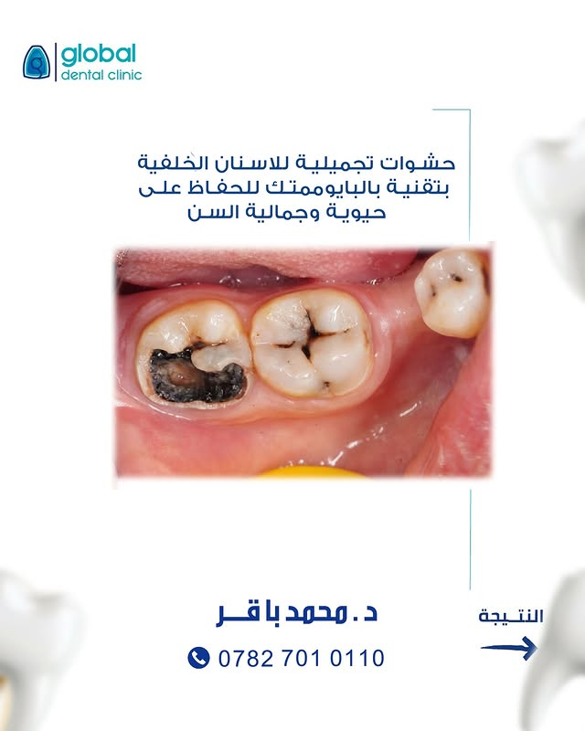
بايوميمتك · د. محمد باقر
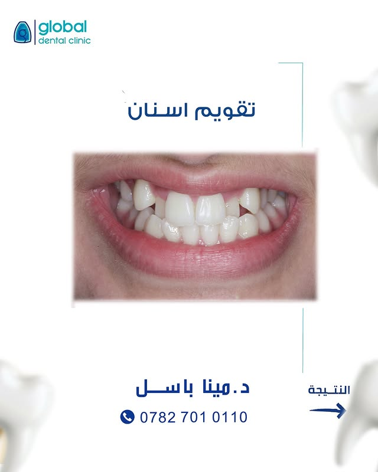
د. دينا حامد
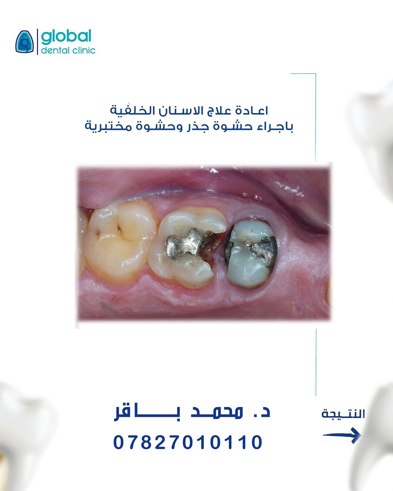
«مو كل سن متضرّر لازم ينشال»
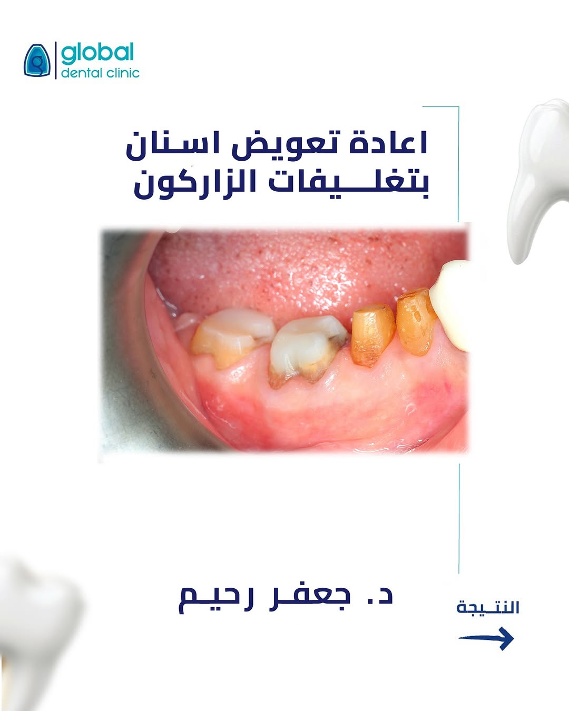
خطّة شاملة · خطوة بخطوة
بكلماتهم. كما كتبوها.
«احسن الحشوات يمكم وبس 😍»
— نور · حشوات
«ما شاء الله على نظافة شغلكم 😭»
— هبة · حشوات
«ما شاء الله على هالشغل النظيف ❤️»
— هدى · ترميم
«عاشت ايدك دكتور 🥹»
— إيلاف · ترميم
«دكتور جعفر لبطل 👏»
— مريض زركون · د. جعفر رحيم
اتّصل، أو دزّ رسالة واتساب. الجلسة الأولى غالبًا فحص وخطّة — مو علاج مباشر.
للحجز
07827010110 واتساب →رقم احتياط
07712261613أوقات العمل
السبت — الخميس · 10 صباحًا — 9 مساءً
الجمعة · مغلق
ملاحظات
نستقبل الأطفال في غرفة الحلزون مع الدكتور محمد باقر. نقدّم خيار الغاز الضاحك للمرضى الذين يحتاجون راحة أعمق — يُرجى الإشارة لذلك عند الحجز.